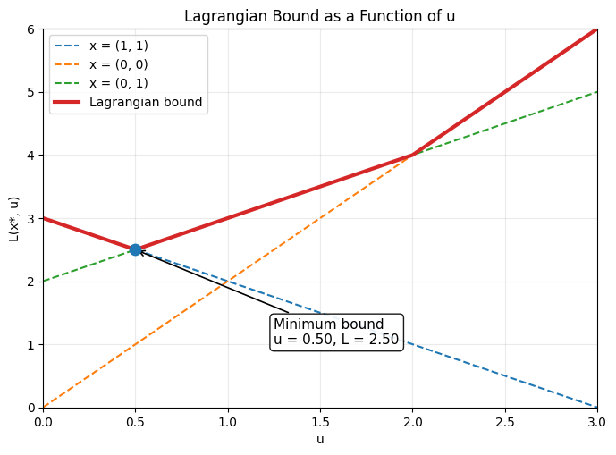

4.7.2 A Simple Example#

Consider the following example problem, which is illustrated in Figure 4.9:
![image.png]()
Figure 4.9
Simple Lagrangian problem.
Observe that, if a 0–1 problem does not have any constraints, it is trivial to maximize. That is, if the objective function coefficient \(c_j\) is positive, then set \(x_j = 1\); otherwise, set \(x_j = 0\). We can express the problem in Lagrangian form as
We begin with \(u = 0\), and note that the maximum of the problem is \(L(x, 0) = 3\) with \(x_1, x_2 = 1\). However, this point violates the constraint, so we substitute these values of \(x\) into the Lagrangian, and consider the result as a function only of \(u\).
This function can be minimized by choosing \(u\) as large as possible. We could try \(u = 5\), for example; and when we substitute this value into the original Lagrangian, we get:
The optimal solution to this problem is to set both decision variables to zero. The corresponding function value is \(L(x, 5) = 10\). This time, when we substitute \(x\) into the Lagrangian in terms of \(u\), we find:
![image.png]()
Figure 4.10
\(L(x^*, u)\) as a function of \(u\).
This subproblem tells us to decrease \(u\) as far as possible. We already know however that when \(u = 0\), it will tell us to increase \(u\). So, the correct value of \(u\) must lie somewhere between these two extremes.
Observe that, for any value of \(u\), we can solve for \(x\) and find the value of \(L(x,u)\). Figure 4.10 illustrates what we have learned so far about \(L(x,u)\) as a function of \(u\).
Recall that we want to minimize \(L(x,u)\) as a function of \(u\). When \(u = 0\), we found \(x = (1, 1)\), and the function was defined by the decreasing line as \(u\) increases. This expression is valid as long as \(x = (1, 1)\); but then at some point, the optimal solution for \(x\) changes, and we get a new linear function describing \(L(x,u)\). We now know what that linear function is when \(u = 0\) and \(u = 5\), but we do not know how it behaves in between these two points. The two line segments in Figure 4.10 represent our best guess at the moment. In particular, it looks as if the minimum value of the Lagrangian will be found when \(u = 1\), so we try that next.
Substituting \(u = 1\) into the Lagrangian gives:
The maximum of this function is \(L(x, 1) = 3\) when \(x = (0,1)\). If we substitute \(x = (0,1)\) into the original function, we get:
![image.png]()
Figure 4.11
\(L(x^*, u)\) as a function of \(u\).
The maximum of \(L(x, 0.5) = 2.5\) occurs at \(x = (0,1)\) or \(x = (1,1)\). It is easy to verify that this is the true minimum of the Lagrangian. That is, we will not find any new solutions that we have not already described in Figure 4.11.
Let us summarize a number of very useful properties of the Lagrangian, and indicate how we can make use of these properties.
The Lagrangian method always finds an integer solution, although the solution found is not necessarily feasible.
If the solution, \(x^1\), is feasible, and if the original function, \(z^1\) at \(x^1\) is equal to the value of the Lagrangian, then \(x^1\) is the optimal solution for the original integer problem.
Most importantly, if \(z^*\) is the solution of the relaxed LP, \(L(x,u)\) is the optimal solution to the Lagrangian, and \(z^I\) is the unknown optimal integer function value, then
A proof of these relationships can be found in Fisher (1985).
In other words, the value of the Lagrangian always gives a bound on the optimal integer solution that is at least as good as the LP. Therefore, if we use the Lagrangian instead of the LP in any branch-and-bound algorithm, we may get better results. The LP bound is never better than the bound from the Lagrangian. In our simple example problem, the optimal integer function value \(z = 2\) when \(x = (0,1)\). The LP solution occurs at \(x = (0.5,1)\) with \(z^* = 2.5\). The LP and the Lagrangian both give the same upper bound.
Code Implementation
# Install required packages (run once in Colab)
!pip install pyomo --quiet
!apt-get install -y -qq coinor-cbc
!pip install scipy numpy --quiet
[notice] A new release of pip is available: 26.1.1 -> 26.1.2
[notice] To update, run: C:\Users\mhamm\AppData\Local\Microsoft\WindowsApps\PythonSoftwareFoundation.Python.3.12_qbz5n2kfra8p0\python.exe -m pip install --upgrade pip
'apt-get' is not recognized as an internal or external command,
operable program or batch file.
[notice] A new release of pip is available: 26.1.1 -> 26.1.2
[notice] To update, run: C:\Users\mhamm\AppData\Local\Microsoft\WindowsApps\PythonSoftwareFoundation.Python.3.12_qbz5n2kfra8p0\python.exe -m pip install --upgrade pip
from pyomo.environ import *
import numpy as np
# ========================================
# 4.7.2 A Simple Example
# Lagrangian Relaxation
# ========================================
import numpy as np
import pandas as pd
import matplotlib.pyplot as plt
from IPython.display import display # Added this line
# Original problem:
# maximize z = x1 + 2x2
# subject to 2x1 + x2 <= 2
# x1, x2 in {0,1}
def original_objective(x1, x2):
return x1 + 2*x2
def constraint_lhs(x1, x2):
return 2*x1 + x2
def is_feasible(x1, x2):
return constraint_lhs(x1, x2) <= 2
def lagrangian_value(x1, x2, u):
"""
L(x,u) = x1 + 2x2 - u(2x1 + x2 - 2)
"""
return x1 + 2*x2 - u * (2*x1 + x2 - 2)
def solve_lagrangian_for_u(u):
"""
For a fixed u, solve:
maximum L(x,u) over x1, x2 in {0,1}.
"""
best_value = -np.inf
best_solution = None
for x1 in [0, 1]:
for x2 in [0, 1]:
value = lagrangian_value(x1, x2, u)
if value > best_value:
best_value = value
best_solution = (x1, x2)
return best_solution, best_value
# --------------------------------------------------
# 1. Show all possible 0-1 solutions
# --------------------------------------------------
all_rows = []
for x1 in [0, 1]:
for x2 in [0, 1]:
all_rows.append({
"x1": x1,
"x2": x2,
"Original z = x1 + 2x2": original_objective(x1, x2),
"2x1 + x2": constraint_lhs(x1, x2),
"Feasible?": is_feasible(x1, x2)
})
all_solutions_df = pd.DataFrame(all_rows)
print("All possible 0-1 solutions:")
display(all_solutions_df)
# Integer optimum by enumeration
feasible_solutions = all_solutions_df[all_solutions_df["Feasible?"] == True]
integer_optimum = feasible_solutions.loc[
feasible_solutions["Original z = x1 + 2x2"].idxmax()
]
print("Integer optimum:")
print(
f"x = ({int(integer_optimum['x1'])}, {int(integer_optimum['x2'])}), "
f"z = {int(integer_optimum['Original z = x1 + 2x2'])}"
)
# --------------------------------------------------
# 2. Evaluate the Lagrangian at textbook u values
# --------------------------------------------------
textbook_u_values = [0, 0.5, 1, 5]
lagrangian_rows = []
for u in textbook_u_values:
(x1, x2), L_value = solve_lagrangian_for_u(u)
lagrangian_rows.append({
"u": u,
"Best x1": x1,
"Best x2": x2,
"L(x*, u)": L_value,
"Original Feasible?": is_feasible(x1, x2)
})
lagrangian_table = pd.DataFrame(lagrangian_rows)
print("\nLagrangian results at textbook u values:")
display(lagrangian_table)
# --------------------------------------------------
# 3. Compute the Lagrangian bound as a function of u
# --------------------------------------------------
u_values = np.linspace(0, 3, 500)
binary_solutions = [(0, 0), (0, 1), (1, 0), (1, 1)]
lines = {}
for x in binary_solutions:
x1, x2 = x
lines[x] = np.array([
lagrangian_value(x1, x2, u)
for u in u_values
])
# L(u) = maximum over all binary x
lagrangian_bound = np.maximum.reduce([
lines[x] for x in binary_solutions
])
best_index = np.argmin(lagrangian_bound)
best_u = u_values[best_index]
best_bound = lagrangian_bound[best_index]
print("\nBest Lagrangian bound from the search:")
print(f"u ≈ {best_u:.3f}")
print(f"L(u) ≈ {best_bound:.3f}")
print("\nTextbook comparison:")
print("Integer optimum = 2")
print("LP bound = 2.5")
print("Lagrangian bound = 2.5")
# --------------------------------------------------
# 4. Plot the Lagrangian bound
# --------------------------------------------------
plt.figure(figsize=(8, 5.5))
# Plot the important binary-solution lines
plt.plot(u_values, lines[(1, 1)], linestyle="--", linewidth=1.5, label="x = (1, 1)")
plt.plot(u_values, lines[(0, 0)], linestyle="--", linewidth=1.5, label="x = (0, 0)")
plt.plot(u_values, lines[(0, 1)], linestyle="--", linewidth=1.5, label="x = (0, 1)")
# Plot the upper envelope
plt.plot(u_values, lagrangian_bound, linewidth=3, label="Lagrangian bound")
# Mark the minimum point
plt.scatter(best_u, best_bound, s=80, zorder=5)
plt.annotate(
f"Minimum bound\nu = {best_u:.2f}, L = {best_bound:.2f}",
xy=(best_u, best_bound),
xytext=(1.25, 1.0),
arrowprops=dict(arrowstyle="->", linewidth=1.2),
fontsize=11,
bbox=dict(boxstyle="round,pad=0.3", facecolor="white", edgecolor="black", alpha=0.9)
)
plt.xlabel("u")
plt.ylabel("L(x*, u)")
plt.title("Lagrangian Bound as a Function of u")
plt.xlim(0, 3)
plt.ylim(0, 6)
plt.grid(True, alpha=0.25)
plt.legend()
plt.show()
All possible 0-1 solutions:
| x1 | x2 | Original z = x1 + 2x2 | 2x1 + x2 | Feasible? | |
|---|---|---|---|---|---|
| 0 | 0 | 0 | 0 | 0 | True |
| 1 | 0 | 1 | 2 | 1 | True |
| 2 | 1 | 0 | 1 | 2 | True |
| 3 | 1 | 1 | 3 | 3 | False |
Integer optimum:
x = (0, 1), z = 2
Lagrangian results at textbook u values:
| u | Best x1 | Best x2 | L(x*, u) | Original Feasible? | |
|---|---|---|---|---|---|
| 0 | 0.0 | 1 | 1 | 3.0 | False |
| 1 | 0.5 | 0 | 1 | 2.5 | True |
| 2 | 1.0 | 0 | 1 | 3.0 | True |
| 3 | 5.0 | 0 | 0 | 10.0 | True |
Best Lagrangian bound from the search:
u ≈ 0.499
L(u) ≈ 2.501
Textbook comparison:
Integer optimum = 2
LP bound = 2.5
Lagrangian bound = 2.5
